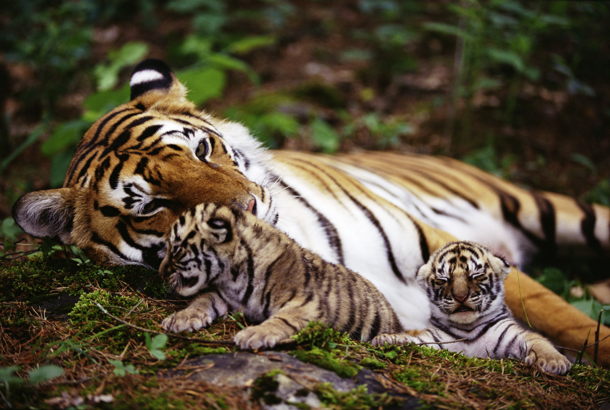
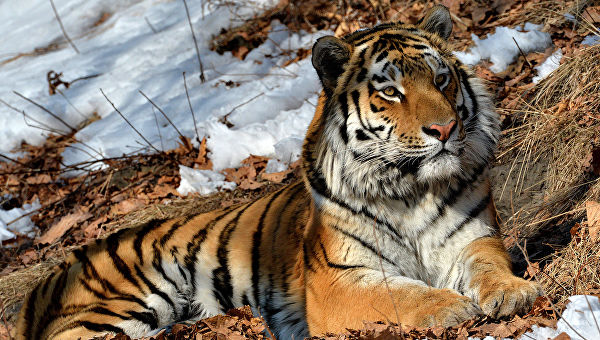

Общая информация
Амурский тигр, самый крупный из всех тигров, поражает своей грацией и силой. Это самый редкий подвид, в природе этих животных осталось меньше, чем в зоопарках. Животным этого подвида не страшны снег и морозы, единственный их враг в природе — человек.
В настоящее время охота на тигров запрещена по всему миру. Повид амурского тигра находится под угрозой исчезновения, включен в Красную книгу РФ и Красную книгу МСОП — CITES I, IUCN (EN)
Тигр издавна считался одним из самых опасных хищников, охотиться на него отваживались лишь смельчаки. Тигриная шкура была предметом гордости охотника и зависти его соседа. Так продолжалось до тех пор, пока этих красавцев в природе не осталось так мало, что каждая встреча является событием.
Тигр меньше, чем другие крупные звери, боится человека, но все же старается обходить его стороной. Бывалые таёжники, жившие не один год по соседству с тигром, говорят, что при встрече с человеком он руководствуется больше всего чувством собственного достоинства и любопытством, а не агрессивностью.

Тигр ходит по следам охотников и лесорубов, навещает охотничьи заимки, прогуливается не спеша по дорогам чаще всего просто для того, чтобы выяснить, что творится в его владениях, а зимой потому, что так легче преодолевать снежный покров. Многочисленным рассказам о кровожадности зверя можно противопоставить столько же рассказов о его добродушии, обращении к человеку за помощью в особо трудные минуты. Хищник нападает только, когда ранен или загнан в угол. Тигрята хорошо приручаются, легко поддаются дрессировке. Поэтому тигров, особенно амурских, можно часто видеть не только в зоопарке, но и в цирке.
История происхождения

Самые древние ископаемые останки тигра были обнаружены в Северном Китае и на острове Ява. Предок современного хищника, существовавший примерно два миллиона лет назад, по сравнению с нынешними тиграми был довольно мелким. Хотя аппетит всегда был на уровне. Выглядел он примерно как нечто среднее между современным леопардом и подвидом тигров, который обитает в Зондском архипелаге.
Одновременно с этим были обнаружены остатки древних тигров на острове Ява, возрастом в полтора миллиона лет. Уже два миллиона лет назад тигры обитали практически на всей территории юго-восточной Азии. В Индии на Алтае и в Сибири тигры появились гораздо позже- около двадцати тысяч лет назад и считаются самыми молодыми тигриными подвидами. Останки древних тигров также были обнаружены в Японии и на Сахалине.
По мере приближения к нашему времени средний размер тигров уменьшался, за исключением уссурийских (амурских) и бенгальских тигров, которые как мы уже отмечали очень молоды.
Несмотря на то, что останки древних предков тигра были найдены во многих уголках земного шара, большинство ученых считает, что родиной тигров была восточная Азия и именно отсюда тигр начал распространяться на юг- в Индию и осторова Зондского Архипелага, на Север- в Северо-восточную Азию и Сибирь. На территорию нынешних России и Индии тигр пришел сравнительно недавно- всего лишь около 20 тыс. лет назад.
В наше время благодаря человеческому вмешательству небольшое количество оставшихся тигров разбито на отдельные популяции, отделенные друг от друга большими расстояниями. Всего известно девять подвидов тигра, трех из них к сожалению уже нет в природе.
Интересные факты о тигре
Количество и конфигурация чёрных полос на шкуре – это основное, что отличает друг от друга 6 оставшихся в живых подвидов тигра. Количество полос может доходить до 100! У нашего, Амурского, тигра мех самый густой и длинный. А вот полосок меньше, чем у остальных подвидов. Индокитайский тигр имеет более тёмную общую окраску, а суматранский - самый яркий.Наш Амурский тигр – самый крупный подвид тигра в мире. У него и самый длинный хвост - до 115 см. Длина хвоста самых мелких тигров - суматранских – 60-90 см.
Уссурийский, сибирский и амурский – это разные названия одного и того же подвида тигра, живущего на юге Дальнего Востока России. Официальное название нашего тигра – амурский тигр. Однако для иностранцев все, что лежит по восточную сторону от Урала – это Сибирь. Поэтому в американской научной литературе наш амурский тигр значится как Siberian Tiger. Уссурийский - устаревшее неофициальное название, которое применяется в разговорном языке и в литературе начала ХХ века.
Амурский тигр ест практически все, что уступает ему в размерах. От манчжурского зайца, который размером с перчатку, до гималайского медведя, который по весу может равняться с тигром. Однако основу его питания составляют копытные: кабан, изюбрь, пятнистый олень и косуля. С точки зрения соотношения цена/качество деликатесом для Амурского тигра является молодой кабанчик: легко поймать и много питательных веществ. В том числе по этой причине WWF выступает за запрет на рубки кедра.От урожая кедровых орехов напрямую зависит численность кабана.
Текст подготовлен при поддержке wwf.ru
|